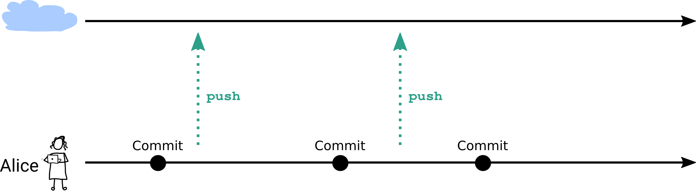
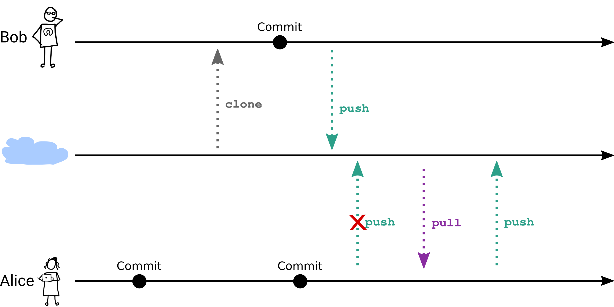
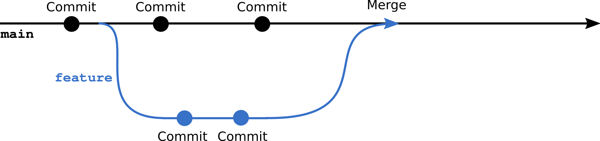

4 Collaborating with Git
4.1 The default git workflow
You have learned about the standard git workflow in the previous chapter, where you work on your local repository, commit changes and push them to the remote repository.
This is the default git workflow for a single developer.

However, when you work in a team, you need to collaborate with other developers. In this chapter, you will learn how to collaborate with other developers using git.
Remember that git is decentralized.
This means, each developer has a full copy of the repository on their local machine
4.2 The collaborative workflow
Let’s look what happens when you work on a project as a team.
Your team member clone the remote repository to their local machine. They work on their local repository and push their changes to the remote repository.
Now what will happen, when you have done work in the same time and you both push your changes to the remote repository?

The first thing happening that you will get an error message when you try to push your changes to the remote repository. This is because the remote repository has been updated by your team member.
When you work on the same file, you may have conflicts. You need to resolve these conflicts before you can push your changes to the remote repository.
4.3 Conflicts
A conflict occurs when two developers change the same file and the same line in the file.
When you pull changes from the remote repository, git will try to merge the changes. If git can’t merge the changes automatically, you will get a conflict.
Git will notify about the conflict with a message similar to this:
Auto-merging file.txt
CONFLICT (content): Merge conflict in file.txt
Automatic merge failed; fix conflicts and then commit the result.When you open the file, you will see the conflict markers:
<<<<<<< HEAD
This is the content of the file after the changes from the remote repository
=======
This is the content of the file after the changes from your local repository
>>>>>>> 1234567890abcdef1234567890abcdef12345678The conflict markers are:
<<<<<<< HEAD- The content of the file after the changes from the remote repository=======- The separator>>>>>>> 1234567890abcdef1234567890abcdef12345678- The content of the file after the changes from your local repository
To resolve the conflict, edit the file, keeping the changes you want to keep and removing the conflict markers.
After you have resolved the conflict, you need to add the file to the staging area and commit the changes.
4.4 Branches
A way to avoid conflicts is to work on different branches.
Branches allow multiple “development stream” in parallel. This is useful when you work on a new feature or a bugfix, experiment with new ideas or work with other developers on the same project.
A typical workflow is to create a new branch for a new feature or a bugfix, you want to adress.
To create a new branch and switch to it, you can use the git checkout -b command:
git checkout -b new-featureNow, git branches off the previous selected (checked-out) branch.
You can check on what branch you are by running git branch or git status.

All commits you make now will be on the new branch and other branches unaffected.
When you push the new branch to the remote repository, you first need to set the upstream branch by running:
git push --set-upstream origin new-featureThis tells the remote repository that the new branch is associated with the branch on your local repository.
Web-based git services like GitHub and GitLab will show the new branch in the list of branches and provide a convienient way to browse the changes on the branch.
4.5 Merging branches
When you have finished working on the new feature or bugfix, you can merge the branch back to the main or original branch.
To merge the branch, you need to switch to the branch you want to merge the changes into and run the git merge command:
git checkout main
git merge new-featureWhen you run git log, you will see that the commits from the new branch are now on the main branch.
If the same line(s) of code have been changed in both branches, you will get a conflict. You need to resolve the conflict before you can commit the merge.